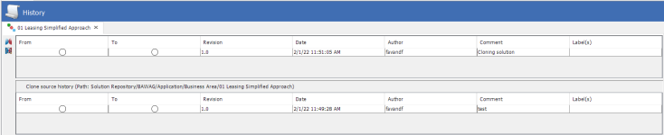
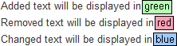
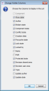
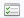

Output area
By default, the Output area is displayed at the bottom right hand side of the User Interface.

The Output area houses the following windows:
- The History window - displayed when opened from the contextual menu against a component in the Explorer window or from the Main menu bar. See the Open the History window help topic for more information.
- The Inventory window - displayed when there is an Inventory available for the folder being worked in or when opened from the Main menu bar.
- The Output window - displayed when the user is testing, validating or scripting or if opened from the Main menu bar.
- The Publishing Inventory window - displayed when the user selects to Publish from a folder.
- The Validation window - displayed when the user selects to validate a Solution, Folder or Component. The Validation window will also be displayed when changes are made to a component and the changes are saved.
- The Search Results window - displayed when the user carries out an Advanced Search.
By default, on opening the software the Output area is empty.
Every time a component is checked into the Solution Repository, or a template is saved to the Content Repository, a new version (revision) is added to the history of that item. Each saved version of the component or template is given a revision number.
The History window allows the user to view the history details of a component or template.
The History window can be opened from the Main menu bar, Explorer window or Recycle Bin. It is displayed in the output area of the user interface and if it is closed, it can be reopened at any time. There can be more than one component or template opened at the same time in the History window.
|
If the selected component or template is located in the Recycle Bin, all fields or columns will be disabled in the History window. |
The History window can be customised. For example, the user can change the row order, change the column order and remove or add columns from view.
Opening from the Explorer window view
To open the History window from the Explorer window
- In the Explorer window, right click on the component from the Solution Repository, or template from the Content Repository for which you want to view the history details and then select History...
The history details of the selected component or template are displayed in the History window.
Opening from the Recycle Bin
|
If the selected component or template is located in the Recycle Bin, the History window will be disabled. |
To open the History window from the Recycle Bin
- In the Explorer window, right click on the component in the Solution Repository Recycle Bin, or template in the Content Repository Recycle Bin for which you want to view the history details and then select History...
The history details of the selected component or template are displayed in the History window.
Opening from the Main menu bar
To open the History window from the Main menu bar
- In the main system view, click on Window in the Main menu bar and then select History. The History window is displayed.
- In the Explorer window, right click on the component from the Solution Repository, or template from the Content Repository for which you want to view the history details and then select History...
The history details of the selected component or template are displayed in the History window.
Every time a component is checked in, a version is saved in the history of that component; meaning that any pre-existing versions are already there in the shared domain. When the user checks in an updated component from the user domain a new version/revision is added. Each saved version of the component is given a revision number and can be viewed in the History window.
The History of checked in components is available to the user at all times. A user can compare versions from the History window.
The History of checked in components is available to the user at all times. A user can compare versions from the History window by selecting either the:
 Print Comparison icon, or the
Print Comparison icon, or the
Text Comparison icon (On-Screen view)
The software will produce details of the component differences either as a print out that can be saved or printed or via a read only display that provides descriptive details of any changes in text form, enabling the user to easily view the details of the component differences.
When a component that has been marked as protected by an Experian user, (that is it is displayed with the following icon ) is opened in the History Window by a normal user, both the Text Comparison and Print Comparison icons will be disabled.
To compare component versions
- In the Explorer window, right click on the component that you wish to compare versions.
- Select History.
- The History window will be displayed.

- Using the radio buttons in the From and To columns in the History window, select the component versions you wish to compare
- Click on the On-Screen Comparison icon to open the Text Comparison view.

- Click on the Print Comparison icon
 to open the Print Comparison editor
to open the Print Comparison editor
Use either comparison tool as required.
The Inventory of saved components is available to the user at all times.
The Inventory window displays all components saved on the user and the shared domain, for the current folder selected by the user in the Explorer window. When a component is updated, it is automatically updated in the Inventory window.
The Inventory window is not displayed by default and can be initiated from the Main menu bar.
When the Inventory window is initiated for the first time in a current session, it is housed in the Output area of the User Interface. By default, the Output area is displayed at the bottom right hand side of the interface.
| Components that have been moved to the Recycle Bin can also be viewed in the Inventory window when the Recycle Bin is selected from the Explorer window |
The Inventory of saved components is available to the user at all times.
The Inventory window displays all components saved on the user and the shared domain, for the current folder selected by the user in the Explorer window. When a component is updated, it is automatically updated in the Inventory window.
Components that have been moved to the Recycle Bin can also be viewed in the Inventory window when the Recycle Bin is selected from the Explorer window.
The Inventory window is not displayed by default and can be opened from the Main menu bar or from the Explorer window.
To open the Inventory window from the Main menu bar
- In the main system view, click on Window in the Main menu bar and select Inventory.
- The Inventory window is displayed.
- In the Explorer window, click on the folder for which you want to view the component Inventory.
The Inventory window will be opened and populated with any inventory data.
| The user can also open the Inventory window by double clicking on a folder, within the Explorer window. |
To open the Inventory window from the Recycle Bin
- In the Explorer window, select the Recycle Bin.
- Click on Window in the Main menu bar and select Inventory. The Inventory window is displayed.
The Inventory window will be opened and populated with all of the components that have been moved to the Recycle Bin.
| The user can also open the Inventory window by double clicking on the Recycle Bin folder to view the components that have been moved to the Recycle Bin. |
When the Inventory window is opened for the first time it is housed in the Output area of the User Interface. By default, the Output area is displayed at the bottom right hand side of the interface.
If the Inventory window is closed, it can be reopened again at any time, but it will display in the Main editor. The user can view it in the Main editor or move it back into the Output area by dragging and dropping the window. See Customise the User Interface for more information.
Each time a user updates a component a record of the update is stored in the Inventory. This record is held and can be viewed in the Inventory window.
The Inventory window can be customized; the user can change the row order, change the column order and remove or add columns from view.
To change the row order in the Inventory window
- In the Inventory window, click on the header of the column you wish to reorder.
- Data is ordered in alphabetical order starting at the top.
- To reverse the order, click again on the column header.
Each time a user updates a component a record of the update is stored in the Inventory. This record is held and can be viewed in the Inventory window.
The Inventory window can be customised; the user can change the row order, change the column order and remove or add columns from view.
To change the column order in the Inventory window
- In the Inventory window, drag and drop the required column header to the required column using your mouse.
The column order will be changed.
Each time a user updates a component a record of the update is stored in the Inventory. This record is held and can be viewed in the Inventory window.
The Inventory window can be customized; the user can change the row order, change the column order and remove or add columns from view.
To remove or add columns in the Inventory window
- In the Inventory window, click on the
 button. The button is only visible when the scroll bar on the right of the Inventory window is visible. If not shown, make the window smaller by dragging the top of the frame toward the bottom of the screen or right click on a column header.
button. The button is only visible when the scroll bar on the right of the Inventory window is visible. If not shown, make the window smaller by dragging the top of the frame toward the bottom of the screen or right click on a column header. - In the Change Visible Columns dialog, tick the boxes to remove or add columns from view. Only the columns ticked will display in the Inventory window.

- Click on the OK button.
The columns ticked will display in the Inventory window.
To display the content of sub-folders
- In the Explorer window, click on a folder.
- Switch to the Inventory window.
- The components in the folder you selected are displayed.
- Click on the
 icon next to the component list.
icon next to the component list. - The components in the sub folders of the original folder are also displayed.

{kind=link}
{kind=link}
{kind=link}
{kind=link}
{kind=link}
| When you navigate away and back to this folder, the view is reset to normal state, which means that the content of the sub-folders are not displayed. |
Each time a user updates a component a record of the update is stored in the Inventory. This record is held and can be viewed in the Inventory window. The Inventory window will display all components within the selected folder.
The user can use the Filter text field to filter for specific component names.
To filter component names in the Inventory window
- In the Inventory window, click on the
 button.
button. - The Filter field will now display at the bottom of the Inventory window.
- Type the word you want to filter for in the free text Filter field.
The items matching the typed letters are instantly listed.
To clear the field, click on the Clear button.
To remove the Filter field from the Inventory window, click on the  button.
button.
| The Filter text field is not case sensitive. |
Each time the user carries out testing, validation and scripting, output is generated. Output advises the user of activity, confirmation of actions, any errors, the severity of the errors, how many errors there are and in which object the errors occur.
Output is displayed in the Output window.
Each time the user carries out testing, validation and scripting, output is generated. Output is displayed in the Output window.
The Output window is not displayed by default and is opened automatically when the user carries out testing, validation and scripting or from the Main menu bar.
To open the Output window from the Main menu bar
- In the main system view, click on Window in the Main menu bar and select Output.
- From the drop-down list select Output.
The Output window will be populated with any error data.
When the Output window is opened, it is housed in the Output area of the user interface. By default, the Output area is displayed at the bottom right hand side of the interface.
If the Output window is closed, it can be reopened again at any time.
Validation is a service that carries out a check on the validity of a Solution, a Folder or a Component and its contents.
The validation service will call an individual Solution, Folder or Component's validation service if one is registered against it. The service will then call the publishing/references service, which will check to make sure that there are no broken references or missing publishing rules within.
Validation can be done in several ways:
The user may validate a component from the Main menu and from the Main tool bar.
The  icon in the main tool bar enables the contents of an open editor to be validated.
icon in the main tool bar enables the contents of an open editor to be validated.
Validation on a Solution or a Folder must be carried out from the Explorer window.
The validation service prevents the runtime object from being created from the business object if the business object is invalid. Component warnings and errors are displayed in the Validation window. By default, the Validation window is displayed in the Output area of the User Interface.
Validating a component automatically validates any referenced or embedded components.
The user may validate a Component from the Main Menu or the Main tool bar. On doing this, any changes made to the component in an open editor that have not yet been saved will be taken into account during validation.
To validate a component from the Main Menu
- You must have the component you wish to validate open in the Main editor and in focus.
- From the Main menu bar, click on File.
- From the drop-down list select Validate.
The validation process will run and the results will be displayed in the Validation window.
To validate a component from the Main tool bar
- You must have the component you wish to validate open in the Main editor and in focus.
- From the Main tool bar, click on the
 icon.
icon.
The validation process will run and the results will be displayed in the Validation window.
The user may validate a component in the Explorer window. On doing this, any changes made to the component in an open editor will not be taken into account and the validation will be performed on the user/shared area component.
To validate a component from the Explorer window
- In the Explorer window, select the Component that you wish to validate.
- Right click and select Validate.
The validation process will run and the results will be displayed in the Validation window.
The user may validate a Solution from the Explorer window.
To validate a Solution
- In the Explorer window, select the Solution that you wish to validate.
- Right click and select Validate.
The validation process will run and the results will be displayed in the Validation window.
The user may validate a Folder from the Explorer window.
To validate a Folder
- In the Explorer window, select the Folder that you wish to validate.
- Right click and select Validate.
The validation process will run and the results will be displayed in the Validation window.
When the Validation task is running the progress can be viewed.
To view a running validation task
- Whilst the validation service is running the progress can be viewed in the progress bar located at the bottom of the Validation window.
- To view the validation tasks as they run, click on the progress bar to expand the list of running tasks.
- Another validation progress bar will be initiated. The name of each item being validated will be shown as the validation against it runs.
{kind=link}
The validation process will continue to run and the results will be displayed in the Validation window. Once the validation is complete, the progress bar will close.
When the Validation task is running the progress can be cancelled.
To cancel a running validation task
- Whilst the validation service is running the progress can be viewed in the progress bar located at the bottom of the Validation window.
- To cancel the validation task, click on the icon to the right of the progress bar.
- The Cancel Running Task dialog will be initiated. Click on the Yes button to cancel the validation progress.
{kind=link}
The Validation window will remain empty.
The Search Results window when activated, displays in the Output area of the user interface. The window displays the returned results from an Advanced Search.
Advance Search can be initiated from the Main menu bar and has a basic and an advanced option.
The Advanced Search function (basic and advanced) allows the user to search components details for the following;
Words, Phrases, Dates, Users, Component types and Component states.
The Advanced Search function (basic and advanced) enables the user to search for components in solutions only.
The Advanced Search function allows the user to search components details for the following: Words, Phrases, Dates, Users, Component types and Component states.
Advanced Search can be initiated from the Main menu bar and has a basic and an advanced option.
The Advanced Search function (basic and advanced) enables the user to search for components in solutions only.
Any returned search results from an Advanced Search (basic or advanced) will be returned and displayed in the Search window located in the Output area of the user interface.
{kind=link}
The user can perform some actions by right clicking on a component row in the window. The actions available depend upon the component type. Available actions are the same as the actions available in the Explorer window; please see the Explorer window help page for further information. Double clicking on a component in the Component column will open the component in the Main editor.
The user can customise this window:
A user can change the column order by clicking on a column header and dragging into the preferred place.
 Filter: Use this button to display or remove the Filter bar at the bottom of the window. The user can use the filter field to filter for specific words.
Filter: Use this button to display or remove the Filter bar at the bottom of the window. The user can use the filter field to filter for specific words.
{kind=link}
 Change visible columns: Use this button to choose which columns to view. The user can remove or add columns from view using the Change Visible Columns button. This is only visible in the window when the Filter field is visible. This is also available upon right clicking the column header.
Change visible columns: Use this button to choose which columns to view. The user can remove or add columns from view using the Change Visible Columns button. This is only visible in the window when the Filter field is visible. This is also available upon right clicking the column header.
The following columns are available:
Component: This column displays the Component name.
 Area state: This column displays the domain that the component sits in.
Area state: This column displays the domain that the component sits in.  indicates that the component sits in a user domain.
indicates that the component sits in a user domain.  indicates that the component sits in a shared domain.
indicates that the component sits in a shared domain.
Author: This column displays the author/creator of the component.
 Broken state: This column displays the broken state of a component. indicates that there are no publishing rules defined between the component and a dependant component. If the field is empty, the component is not broken.
Broken state: This column displays the broken state of a component. indicates that there are no publishing rules defined between the component and a dependant component. If the field is empty, the component is not broken.
 Component state: This column displays the component state. A
Component state: This column displays the component state. A  indicates a new component. indicates a modified component. If the field is empty, the component is unmodified.
indicates a new component. indicates a modified component. If the field is empty, the component is unmodified.
 Conflict state: This column displays the conflict state of the component. It indicates that there is a conflict. If the field is empty, there is no conflict.
Conflict state: This column displays the conflict state of the component. It indicates that there is a conflict. If the field is empty, there is no conflict.
Creation date: This column displays the date the Component was created.

{kind=link}
 Lock state: This column displays the Lock/Unlock status of the component. indicates that the component is locked by the user who is currently logged in.
Lock state: This column displays the Lock/Unlock status of the component. indicates that the component is locked by the user who is currently logged in.  indicates that the component is locked by another user. If the field is empty, the component is not locked.
indicates that the component is locked by another user. If the field is empty, the component is not locked.
Locked by: This column displays the user name of the user currently locking the component.
Name: This column displays the Name that has been given to the component.
Path: This column allows the user to display the full path of a component.
 Revision shared area: This column displays the version number of the component on the shared domain.
Revision shared area: This column displays the version number of the component on the shared domain.
 Revision user area: This column displays the version number of the component on the user domain.
Revision user area: This column displays the version number of the component on the user domain.
Type: This column displays the Component Type (Decision Process Flow, Call Interface Manager, etc.)
Update Author: This column displays the author responsible for the latest update of the component.
Update date: This column displays the last date that the component was updated.